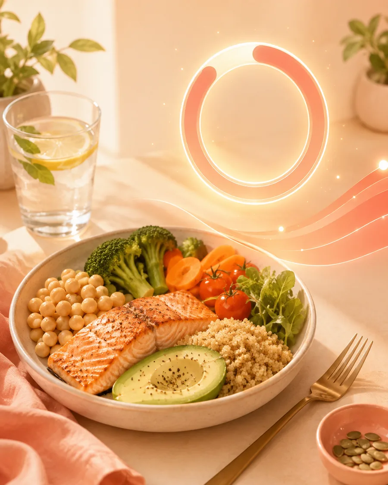

Lose weight without turning eating into a second job.
Weight loss comes down to one thing: a gentle, consistent calorie deficit you can actually keep up. Fotocal makes the tracking part almost effortless — you take a photo, it does the maths — so you can focus on the habit instead of the spreadsheet.
Four steps to steady, sustainable loss.
No crash diets, no banned foods. Just a repeatable loop that fits around your real life.
Set a realistic target
Tell Fotocal your age, height, weight, activity and goal. It sets a daily calorie and macro target aimed at a safe ~0.5–1 kg per week — fast enough to see progress, gentle enough to keep.
Log meals with a photo
Snap your plate and the AI estimates calories and macros in seconds. When logging is this quick, you actually keep doing it — and consistency is what drives weight loss.
Stay in a gentle deficit
Your calorie ring shows how much room is left in the day. Fotocal nudges you toward higher-protein, higher-quality choices so you feel full on fewer calories.
Follow the trend, not the scale
Weight bounces daily with water and salt. Fotocal's weight chart smooths the noise so you can see the real direction — and adjust with your Weekly Report.
Effortless logging is the whole game
Most people quit calorie counting in the first week — not because it does not work, but because it is tedious. Fotocal removes the tedium. A photo replaces the database search, the weighing and the guessing, so the habit survives past day three.
- AI photo scanning for home-cooked and restaurant meals
- Barcode scanner for packaged food
- Quality score points you at more filling, lower-calorie swaps
- Automatic step tracking with Health Connect feeds your daily budget
A coach in your pocket for the hard days
Plateaus and social meals are where diets fall apart. Coach Kal knows your diary and goals, so it can tell you what to order at a restaurant, why the scale has stalled, or how to spend the calories you have left — without guilt or extreme rules.
- Coach Kal: practical, judgement-free advice 24/7
- Streaks turn daily logging into a habit
- Weekly Report shows what worked and what to change
- Log by photo, voice or barcode — whichever is fastest

What a good day actually looks like
Nothing dramatic — a plate you would eat anyway, photographed in a second, and a number that keeps you honest without running your life.
Get the appKeep reading
Short, practical reads that go deeper on this topic.
Start losing weight the sustainable way.
Download Fotocal, set your goal, and let a photo do the hard part.
GET IT ONGoogle Play